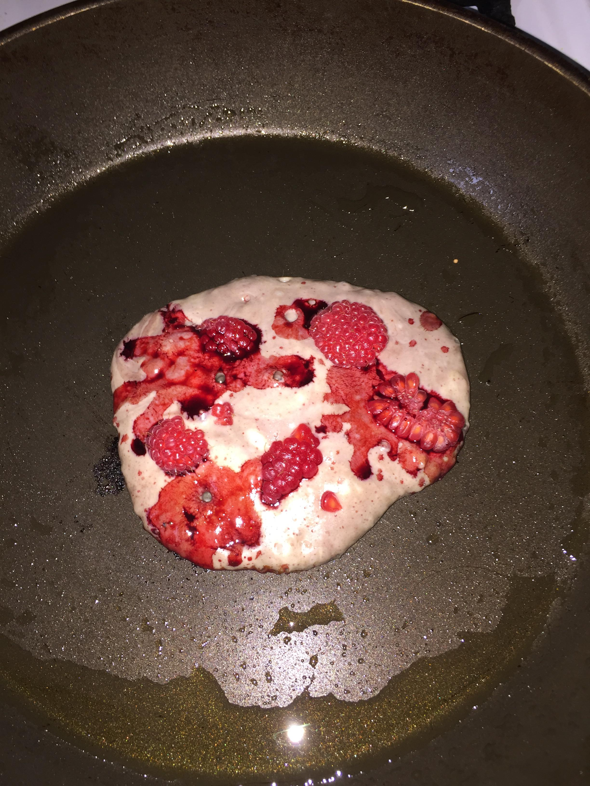
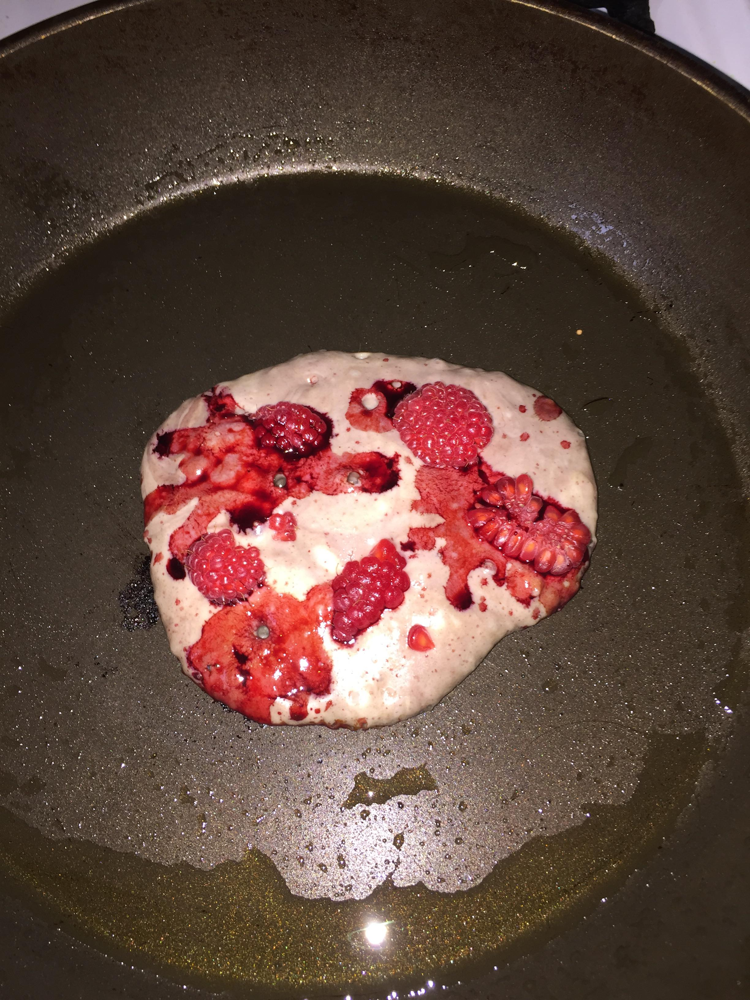

"If you see a miracle, don’t believe it. Your friend. Judee Sill."
dream, and in your dreams babies with the personalities of dachshunds, fat as Macy balloons, float by the treetops
Self-transformation is precisely what life is


 


click here to read my diary
NYE was really really exhausting, I slept today until 12pm, and then I ate spaghetti and peas and went for a walk. I came back and read until 4pm and then I was meant to meet paddy to pump up and play with my basketball, but instead I fell asleep again. I was so tired, I still am. I couldn't cook dinner so I just ate two potato waffles. Why am I so tired? I've been taking iron every day... the container that holds the little plastic balls and which you swallow seems like it's made of plastic, which disgusts me! I booked my train to Scotland and back, I need to decide what songs I'm going to play when I dj with Phil. Lydia and Kim left last night, everyone was too tired to speak by the end of the trip. On the 2nd I met the virgo crew peoples for pizza. We went to the italia uno after and the little man remembered, although for some reason he associated me with hot chocolates
On Thursday morning Jack arrived to stay. At one point this weekend there were four of us in the house, two guys and two girls, that felt really full, but now there's just me. On Thursday we went to see Theo play. Two people asked for my number, which doesn't normally happen in London. On Sunday I watched the world cup final with Charlie and Ewan. I was supporting France because Ewan got them in the sweepstake at his work.
I've been sick more days in the past four weeks than i've been well. anna made me and her turmeric ginger lemon shots on thursday because dj python was the next night and we wanted to make it. she went and brushed her teeth straight after, because we'd ate turmeric porridge for lunch. i made us a wheatgrass spinach smoothie after. all the vitamins and nutrients seemed to work, because we were well enough to go out dancing, but about 4am i started feeling like my cold was coming back and me and ewan had to leave. i made friends with a guy at the n55 bus stop who told me he always finishes work at 4, gets the bus at 4.21, maybe sometimes it's delayed until 4.50 because there's a shortage of drivers. he said google maps doesn't know what's happening on the ground, i dunno how he knows. the bus kept breaking down on the route home, which was long. all the lights would drop out and people would start to sigh and groan and the bus would go eeeeeekkk like all of it needed oiled. i ran the whole km home from the bus stop, on ice, in platforms, cus i needed to pee so bad. the next day i was too ill to appreciate anything. i watched john cassavetes talk about love and felt sad he died so young. today i feel better, a bit, from sleeping so much and repeating all the nutrient consumption me and anna went thru. it's snowing out side, i tried to write in the snow 'calling my guinea pig a skank' but it was too hard to read. me and phil are going for dinner tomorrow, nouilles. what will you eat tomorrow night?
This weekend I went to stay with Harry in Paris. He had an apartment near the canal, between gare du nord and gard de l’est. When I saw his apartment through the window I said “wow, look at that one”. His light fitting was a big chandelier with coloured bits of plastic and glass sticking out of it like an explosion. The window had coloured transfers on it to decorate the light that shone through. The ceiling was really high. You could access his bedroom using the stairs and the wall was glass, with curtains, and it looked down onto the living room. I slept in a little room at the back that had nothing in it except a projector, a small shelf and a double futon bed with covers etc. You slid the door closed and then turned off the light and that was it… like being in the womb. Russell said it looked like a Japanese elevator. His shower was tiled blue and all his towels were pink. Me and Harry have had the same taste since we met on the internet when I was 12 and he was 14 or something. He had hair like a final fantasy character then and a poster of einstein on his bedroom wall. He said he used to carry books around in his hands, without a bag, so people knew what he was reading. We went to an irish bar that wasn’t very irish, since the staff were french and argentinian. He said he’d take me to le clown bar but it was shut all weekend. We went to the broken arm shop and some things were nice, but not that many. Everything seemed weird sizes. I got tempted to buy some nike trainers I didn’t need but the colours were cool, they had a kind of white mesh over the blue trainer like a ghost fairy was haunting them. We went to le sully and I liked the pink neon sign and the fact it was full of old jamaican men. We went to another bar Harry’s friend had taken him to, I got a fresh orange juice because I was feeling low on vitamins. We listened to blaketheman1000 and watched a Charles Manson documentary. I should have played him my favourite dido remix but I forgot. We ate chocolate pastries from a boulangerie that had a sculpture of a sleeping fox made out of chocolate. We looked at a rothko in the pompidou, Harry said the ginger hairs on the back of his neck stood up. A strange man came up to us and told us he liked our faces. Someone else asked why we were queuing for noodles. He said ‘normally when people queue for something, it means that the thing is good’. He had deduced the obvious.
yesterday in the distance outside my window i saw lightning, and when it struck the colour of it was rose gold. it looked like a rose gold necklace in the sky.
today when i looked out of my window i spied an aeroplane moving peacefully like a gardener across grass.
have the birds always been this loud? do the insects always scream?
when you kill an ant, do you imagine its personality?
this week i dropped an earring when i was out postering, and i was so sad i decided i'd go and search for it. i guess i was sad but i guess i was also optimistic, and i found it! the odds of that are crazy, since i'd walked 8 or so miles and could have lost it anywhere. i found it near the till in coop where i'd taken my bag off, and when i found it i felt so ecstatic, like the inverse of when you drop your phone on the ground and it smashes, but maybe even a bit happier than that. i went to dinner last night with charlotte and lydia, to kpc, and hannah and jamie were working. jamie texted today to ask me for a drink. dad came for a walk at lunch and we saw jyulia, she goes away on monday so i want to say bye this weekend. i emailed simon reynolds back about doing an invisible jukebox talk in glasgow. my armpits smell gross
i move to london in three weeks. i have a headache. me and james got drunk in an old bar opposite rub a dub that was playing yes sir, i can boogie by baccara and then we got up and sort of waltzed to it and twirled each other round. it was funny but i don't know why we got so drunk, it was only 6pm. current affairs played at mono with kaputt and me and cal (kaputt) bought badges, i bought a daniel johnston one that i pinned on my trousers. i cried for like a second watching seb play guitar, i keep crying at music i really like. i cried at judee sill's the kiss this morning too, only like one tear. i woke up at 5am and couldn't get back to sleep. i text charlotte and louise thinking one of them might be up and we could go for a drive. yesterday me and charlotte picked loads of nettles and made pesto at her house. she applied to do a mapping workshop at supernormal. i'm happy to be alive right now. naan on a hook. i'm texting galen, it's 3am there. i don't like to think about myself, i like to think about you
i Started my new job a month and a half ago and moved into my new flat 3 weeks ago.. lockdown is boring but alright for me. TODAY i walked matty black's dog ama and she almost got in a fight with another dog and the owner of the other dog started screaming at me and matty in the most shrill voice ever. last night i went to seb's house to help him with his website and he gave me a screeprinted tshirt. i met roos for lunch earlier that day and we walked around, mainly talking about the new flat her parents bought for her and felix. i went to rob and claire's to give them pancakes and claire asked if i was catholic. the night before i went to jessica's to see her new plants and eat miso chocolate brownies. i ate the same brownies in berlin at jay's house, that his flat mate prepared. jessica gave me my christmas present, a book about capitalism and this mushroom that is really expensive to buy but grows as a weed. she also gave me some wool
Pleasure Seeks Charlotte’s Effects (1975). been lonely in berlin but not ALONE. just everything is shut and my mind is racing, i can't keep busy enough to feel tired at night. last week i did a ceramic class, throwing on the wheel, and it was so frustrating, it was like i was realising all my frustrations with life in real time, as this wheel spun round and round with a lump of clay on it that i couldn't control. today i met lydia and david and walked for four or five miles around the city, from neukolln to warschaurstrasse where david stays. we all felt low but not low enough to cry, just done in, just moaning. we got to his flat and admired his new uniqlo trousers, which i'm gonna get cal for christmas. yesterday rachel and sean came over and we sat and lay on the couch under a duvet in the candle light and ate babaganoush. i've been sleeping so bad i think i see bugs everywhere; a throwback to having cockroaches in summer. i got a job i start on jan 6 finally hopefully. with the money i'm gonna earn i could afford to figure out who i actually wanna be. i could get a dog, swimming lessons, driving lessons, an expensive outfit hair and make up, attract a suitor, go to japan, buy some friends, buy a life.
miss my mom dad and brother. miss my microphone too. today me and lydia went running in tempelhof in the pissing rain. went back to her's and had a hot shower ate bulgur wheat n sausages n homemade beans then met edgar for coffee and a taco. we tried to go to the cinema but there were no seats next to each other so just went home. last night me and lydia got drunk on vodka n pink grapefruit fizzy juice n watched bombshell. i walked home at midnight. my face cream has gone missing today so i asked my brother to send more. not sure if i lost it at the fleamarket at wedding or if it's been stolen :@. tomorrow i'm going to see tom scholefield's deskless bedroom. me n sean are going to try n make a music video too. i have a job interview on tuesday
i feel so sick and nervous . i have to do a numeracy test later and my flat mate turned off the wifi (no mate about this !) so i'm sitting in the library. it's really warm i need to take my thermals off :-( just went to take my thermals off and the toilet is shut for rennovation for the full month so i had to go to a cabin outside and i forgot to lock the door because i was so confused by the blue light and the darkness of the space and then someone walked in on me getting changed and looked really angry :-(
i'm in berlin and it's my 27th birthday. at war with my flat mate who won't let me use the heating or the wifi. spent yesterday at the turkish market with rachel sean and lydia, then back to lydia's for a kale recipe by anna jones (lyd says kale is very hard to come by in berlin). david gave me a backy home on his bike and i kept thinking my right foot was going to get caught in a car and i'd get pulled off and ran over and i have no health insurance (i thought i did because i took out travel insurance but i think if the flight is one way it doesn't work). the day before i walked all over kreuzberg and then the wrong way around tempelhof and then north to brandenburg tor to meet rach n sean, via the topography of terror. it was too disgusting and i had to leave after i read half the boards. we made dinner using ingredients from the turkish shop and fresh flat breads for a hole in the wall. sean made maria's pesto recipe. i know no german all i can say is one soya cappucino please and then thanks when i'm handed it. i don't even like cappucinos that much
today 29/09/2020 i met peter for cof - (ahhhh my freezer is making a really annoying noise??) fe and walked around newlands park. i hadn't seen him since last september when he got back from portugal and he had a funny hair cut he'd styled himself. he had as a present for me the piece of butter wrapper i'd wrote on saying ' i came to see you wow ' and slid under his door about 2 years ago. it was still greasy. now i'm going to see laurie paul, only i'm very tired. so tired i'm worried i have lymes disease
i'm moving to berlin in 16 days. this morning i went for bagels with my dad only they had no filled vegan bagels so i had to get a sourdough sandwich with cauliflower and sweet potato in; not sure how i felt about this. cal got a cinnamon bun. then i looked for a flat and job in berlin for two hours but was overcome by stress and fell asleep. i' m going to carolyn's to do some sewing now. yesterday me sephi duncan rob and kenny had a coffee morning in the park sitting at the band stand like marlow's crew in season 4 of the wire
List of people i WANT to see before I leave:
Joan, James, Claire, Val, Ria, Laurie Paul, mini (is this possible?), Peter, Ruaidhri, sally and reini, matty black, kimblerley!
did you know that in the 1600s people wore the lice they’d picked off you in lockets as a sign of affection? Last night me Ali and Lauren went to see
tenet in the cinema. We smoked Ali's vape and drank pimms and then laughed loads at wtf was going on in the silly script. During the day I went running
with Jessica around Queen's Park and up her old street where her family home was. she had latin class in the evening. today pamp studio sat on a zoom call
about scottish coops and networking in Scotland. It's wednesday. On monday we went out for my dad's 49th bday and i DRANK some skinny coladas.
All day I’ve lay in bed, it feels less like a day and more like a moment. It goes on and on and on. I search for jobs, apply for a job, exit the window of a job specification, get up, shower, eat snacks, lay down, fall asleep, wake up with a bunch of texts causing my phone to vibrate. I google ‘jobs portugal’, ‘jobs mexico’, ‘jobs berlin’. I don’t go anywhere. This has been going on for weeks. My friend texts saying she hates her job and that she’s quitting. If this is the alternative I would stay - never applying for a job because you know how bad they are.
I get up, i go to the shop. I look at aspirational food accounts on instagram for half an hour before I do so - i don’t recognise half the words involved in the food description. Still i think i could be a chef, it’d be nice to stand on your feet all day. The energy would come up through the ground, travel up the spine, connect with the receptors in your brain. Your back would hurt though, bending over to empty and refill the dishwasher. You would have to get something for that, a wife or drugs. Now I’m in the shop and I pick up tomatoes and olive bread and bagels for Amy. I think ‘I’m going to bump into Meg or Mini’ only I can’t remember Meg’s name, just her face. Then I walk to the end of the aisle and hear a noise, a little big voice saying “hello”. Mini’s standing in front of me in a face mask and a greencity jumper. I’m so excited to see him; it’s been five months. He’s buying cigarettes. When I get home the rain is so bad, the sky’s changed colour, it’s dark and it looks like it’s going to stay dark all day and maybe not stop raining until tomorrow. My dad is coming over at midday to walk to Syrian Pie with me, so we can have a lunch of dips and breads and pies and rice. The little woman who leans out of her window smoking cigarettes a block down from me is awake and smoking already. When she leans out of her window her nose must be getting wet. The air must be cold and fresh and clash with the smell of the cigarette, the atmosphere of her room. After a minute or two she slides the window down.
12/08/2020: today i started an application form for camden council that I didn't finish, but I finished Severance, which I started on Monday
Me aliyah jamie Carolyn Nadia and stew went for gnocchi for dinner and a drunk woman shouted slurs at us on the way home. stew cycled carolyn's bike along my road. I'm looking
at a photograph Jack uploaded of himself at Beachy Head. Here's nadia and jamie's clothing project ☺
From “The Burrow,” Franz Kafka (trans. Michael Hofmann)//
Bawdsey Manor, the site where radar was invented, just opposite the locations in Old Felixstowe that inspired key scenes in M R James's story "Oh, Whistle and I'll Come To You". The conversation will be illustrated by readings, a screening of Fisher and Sharp’s short film, Bleak and Solemn (2013) and excerpts from On Vanishing Land.
11/08/2020: went to ria's old house in ruchill. It was a home for the doctors who worked at Ruchill Hospital before they closed it in the 90s (demolished it in 2012). reading Severance by Ling Ma, Kimberley lent me her copy. she also gifted me some homemade kimchi and spicy carrot salad her mum made. Her mum said she doesn't like vegan food because it's what you eat when you're poor. Lydia gave me an ice cream maker to make vegan ice cream. I want to try doing strawberry shortcake
04/08/2020: hmmm been studying software engineering all day. what is coupling??? yesterday i went to seb's studio and picked some wild flowers. they're living in a passata jar in my kitchen window
30/07/2020: back from paris. i've included some photos from my holiday for you to look at here
24/07/2020: getting ready to go to paris 
23/07/2020: me and rob applied for a grant and i was too drunk when i uploaded the application and missed 9 sections :(
15/07/2020: living through covid has been boring. lost my job... lost my mind. only kidding. i've been reading lots of leonard michaels and watching mad men. in my head it's 1963 and i'm scared of the bay of pigs. Stories should be natural as apples, brief as lust, long as a thought.
12/09/2019: john bercow...my one true love
rip daniel johnston 14/09/2019: today I had band practise with sephi and rob. we practised these songs. waldo was sitting on the couch playing games on his phone. after practise i walked to paesano with sephi and got pizza. me and mum went to the cinema to see the souvenir, which i thought wasn't very good honestly.
15/09/2019: today i had work. i had a vegan chicken wrap for lunch and lydia and kimberley came in to see me. i finished at half 4 and went to their flat to hang out while lydia waited to sell a ps4. they'd been at some tempeh making workshop. the tempeh smelt good but tasted crap
16/09/2019: tonight that weird courgette, earlier mac n cheese, last night a potato rosti and edamame, the night before pizza, the night before a falafel, the night before mousaka, night before weird onion bread with parsley on top, night before cottage pie, night before burger, night before beetroot n hummus flatbread
17/09/2019: woke up. went to swg3, had a brownie ;) for breakfast and when i tried to get out of the lift someone had locked the door in front of it. couldn't stop laughing. when someone found me they started to laugh too. stayed up late last night reading jade sharma's problems. "teach prostitutes to code, slap qr codes on homeless people"
18/09/2019: read lovelock's novascene. almost finished it. andrew says his politics is dodgy but i think his takes on science are interesting enough for
me to overlook that, especially since they aren't mentioned in the book. went to see for sama. cried three times. felt very sad for everyone who died
in rebel held aleppo. I thought I was spelling ‘pescetarianism’ wrong today but apparently Microsoft just prefers a different spelling to the one accepted by Google. I woke up this morning and ate cheese (vegan) grilled on toast with sliced onion. At work I drank an iced oat latte and for lunch I had a burrito with scrambled tofu. I didn’t have any dinner… instead I sat on the grass outside and read this interview with Julian Casablancas written back in 2003. He really talks about nothing, like actually nothing, the whole time. He just mumbles shit to Rolling Stone for an entire week, obviously drunk and high. At points getting close to being philosophical but always missing the mark. The only thing he’s saying that makes sense is how much he hates Pringles, like he hates these pop chips, doesn’t seem to matter what flavour. The interviewer is kind of like ‘okay, I get it, right, no Pringles’, trying to ask him about Nigel Godrich’s production or whatever. He keeps going back to the Pringles, like three different days in a row. On the last day they’re in 2A (on Avenue A, duh) and he’s just talking shit and then he leaves, ditching a half-eaten grilled cheese with extra bacon. Beside the sandwich debris, he leaves a folded up piece of paper. Probably looking for clues since the interviews have yielded so little, the Rolling Stones writer (Neil Strauss) unfolds it. It’s a receipt - for a tube of Pringles, purchased that day.


some photographs of a more recent week
reach out to me through cyberspace
some photographs of my life from the last weeksome photos of canada in summer
some photos of the past ten or so years. maybe more like 8? 'Garage Rock before The Strokes .equals Mac before Pre-emptive Scheduling'
'Garage Rock before The Strokes .equals Mac before Pre-emptive Scheduling'
 extract on a lecture by anne carson not sure why it's here but it is, leave room for god
extract on a lecture by anne carson not sure why it's here but it is, leave room for god